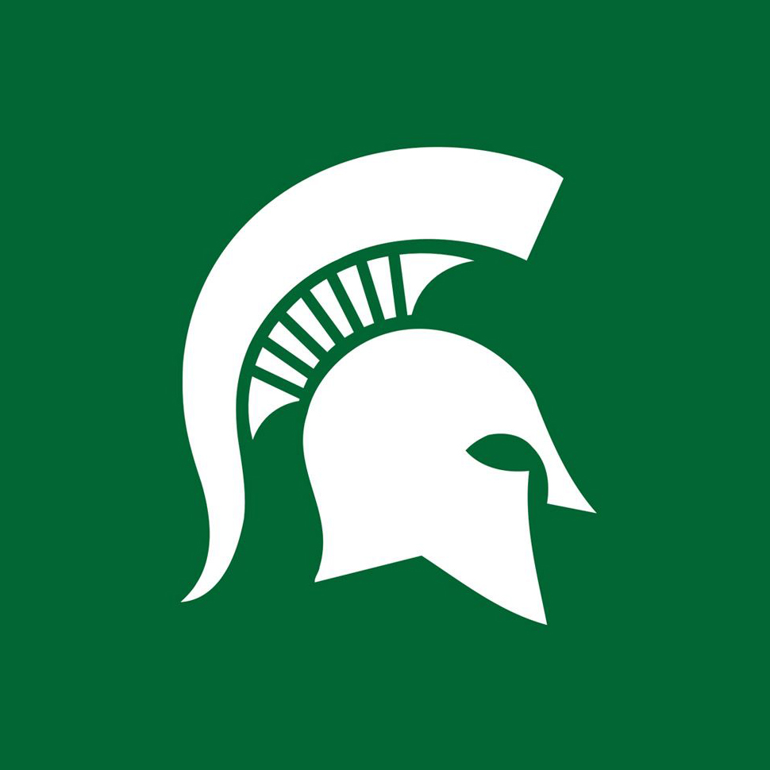

OU

MSU
Deloitte

When I first started off my college career, I was dead set on going to Oakland University. My parents urged me to go visit other colleges to see if I'd like them too. "Nope, this is what I want," I thought to myself. When I enrolled at Oakland, I declared myself as a Management Information Systems major, and absolutely fell in love with my studies. However, while I loved my academics, I found myself in a rut. All college was to me at that point was an education. Living at home, I was not experiencing the prophesied "College Experience" everyone told me I would get. I started reaching out to my high school friends at other universities (who went away to school) and asked them how they were liking college. They were loving it. "Alright," I thought to myself, "let's see what this whole college experience is about." So I visited Michigan State in the fall of 2014.
When I visited MSU that fall, I fell in love with the university. I absolutely loved everying about it. The academics, the students, the atmosphere. Everything was great. One of the first things that I did when I got back home was look into transferring. Fast forward into the fall of 2015, and I was on my way to East Lansing again. This time, as a student.
When I got to MSU everything was great. I loved my classes, even though I switched curricula, and I greatly enjoyed my first year at MSU. With a Media and Information major and Information Technology minor, I found lots of open doors. The flexible curriculum of my courses allowed me to take similar classes to an MIS major, such as networking and e-commerce, and I was required to declare a cognate as well, with mine in business. So I will also still be exposed to the business classes again too, such as marketing, accounting, finance, etc.
This October, I signed with Deloitte Advisory to be brought on as a Technology Risk Consultant Intern in the Detroit office for the summer of 2017, since I'll be graduating in the fall of 2017. I am very excited for this internship to start, as I will be allowed to use many of the crucial skills I have learned in my Systems Analysis & Design classes, project management classes, and my business classes. Here's hoping to a great summer!